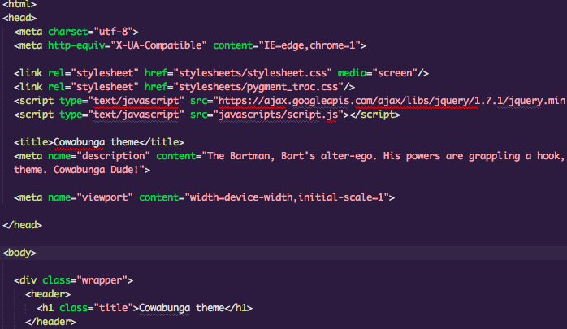

Cowabunga Sublime Text 2 / Textmate Theme
the "Bartman". Bart's alter-ego. His powers are grappling a hook, climbing walls, gliding and inspiring me to make this theme. Cowabunga Dude!

Installing
Don't Have a cow man!
You’ll want to drop the file "Cowabunga.tmTheme" into:
Sublime Text 2:
~/Library/Application\ Support/Sublime\ Text\ 2/Packages
Then, go into Sublime Text 2 preferences, go to Choose Scheme and select Cowabunga.
Textmate 2:
~/Library/Application\ Support/Avian/Bundles/themes
Textmate:
~/Library/Application\ Support/TextMate/Themes
Then, go into TextMate’s preferences, choose the Fonts & Colors tab and choose "Cowabunga" from the drop-down menu.
If you're a Vim User, see: